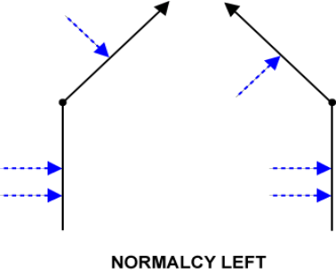
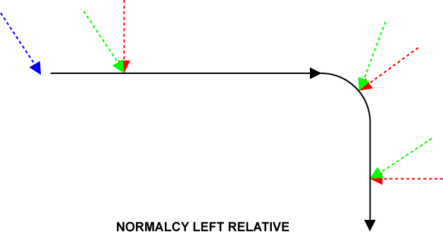

|
Was this information helpful? Yes No |
Copyright |
|
You are here: CNC Option > G-Code and M-Code Programming > Motion > Advanced Motion > Corner Rounding and Normalcy > NORMALCY LEFT
|
NORMALCY LEFT Command |
Turns on NORMALCY LEFT.
|
Syntax: |
|
NORMALCY LEFT |
|
NORMALCY LEFT RELATIVE |
|
|
Example: |
NORMALCY LEFT NORMALCY LEFT RELATIVE |
This command activates the mode of operation where the cutting tool is automatically kept perpendicular to the part being cut (normalcy mode). The angle of the normalcy axes is identified by the blue arrows in the following figure.
The active state of this command is shown by Bit 16 of the Task Status 2 variable. Use NORMALCY OFF command to deactivate normalcy.

When you use a RELATIVE keyword, a normalcy alignment move is not done before the first motion command in normalcy mode. When you activate normalcy relative, the angle between the normalcy axis and the motion profile is maintained. Because you are in relative mode, this angle might not be 90°.
The following figure shows NORMALCY LEFT command and NORMALCY LEFT RELATIVE command for a series of coordinated moves. The black line shows the coordinated move profile. The blue arrow shows the initial position of the normalcy axis before the move starts. The red arrows show the position of the normalcy axis when you use NORMALCY LEFT command. The green arrows show the position of the normalcy axis when you use NORMALCY LEFT RELATIVE command.

|
Was this information helpful? Yes No |
Copyright |
 2001-
2001-